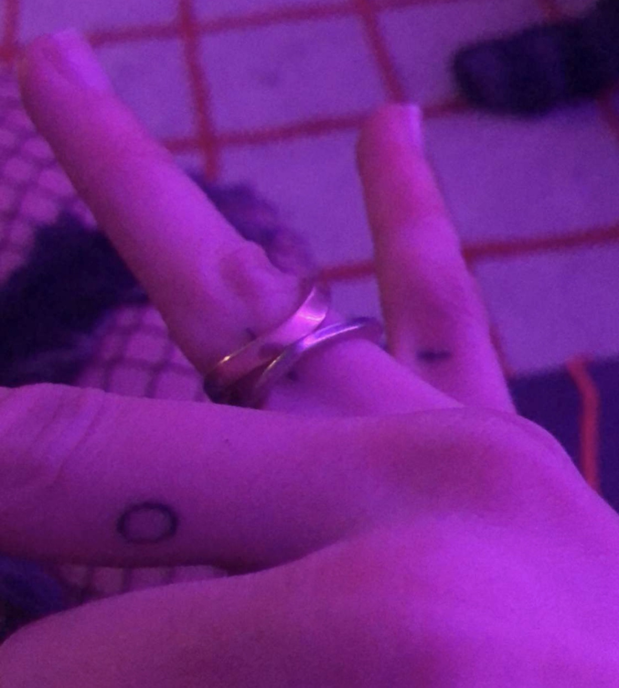

Symbol of Venus
Symbol of Venus
TATTOO ONE
Name - Korissa Frooman
Tattoo and placement - The symbol of Venus broken up into three on the side of the right hand fingers.
How old are you? - 20 years old.
How old were you when you got this tattoo? - 20 years old.
How many tattoos do you have in total? - 3 small ones that make up to be one.
How much did it cost you? - $300
Where did you get it done? - Baneul tattoo, New York.
How long did it take? - 20 minutes.
How impulsive was it? - Considered it for a year. Is it your own artwork? - It’s my own art.
BACK BACK BACK BACK BACK BACK BACK BACK
